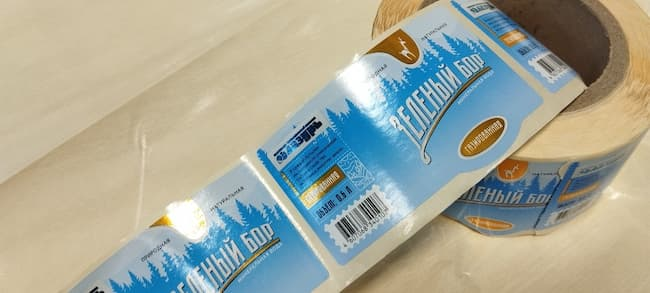
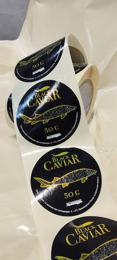
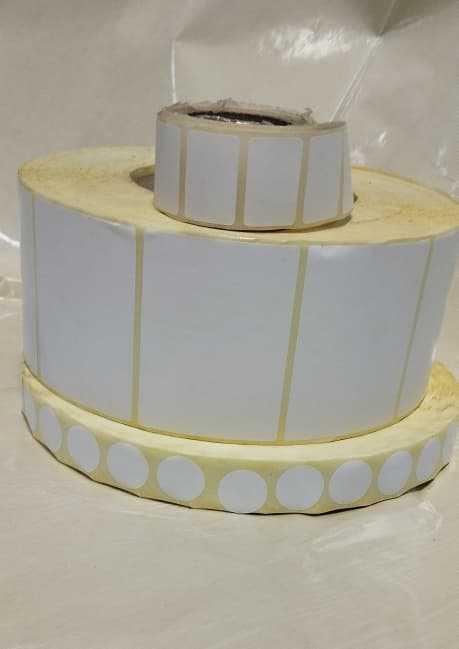
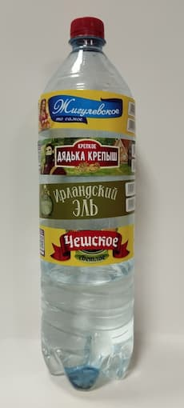
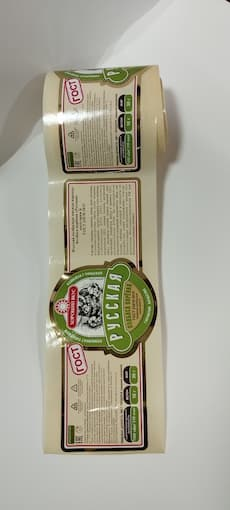
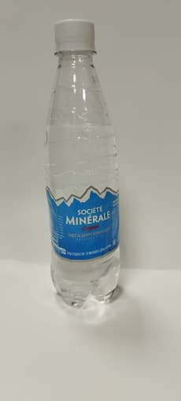
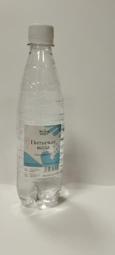
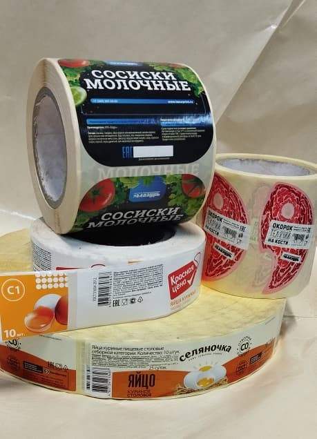

В современном мире не обойтись без этикетки. Это маркировка любой пищевой и промышленной продукции. Этикетка может быть красочной , притягивающей к себе взгляд, может быть информативной, порой служит для украшения предметов интерьера, это может быть акционный стикер, либо просто служит для транспортной маркировки.
Типография «Лазурь» специализируется на изготовлении и печати самоклеящихся этикеток. Техническое оснащение и возможности нашего производства позволяют выполнять печать наклеек, стикеров и этикеток на заказ малыми, средними и промышленными тиражами.
Сердцем нашей типографии является современный 8-ми красочный печатный комплекс BOBST MХ, позволяющий выполнять высококачественную флексопечать и различные виды отделки самоклеящейся этикетки за один прогон (on-line). Постпечатная отделка этикетки улучшает ее потребительские и защитные свойства, придает оригинальный вид и выделяет из общей массы.
Для отделки используется:
В производстве самоклеящейся этикетки применяются следующие основные запечатываемые материалы: Бумага полуглянцевая и матовая, термобумага Eco и термо Top, пленка полипропиленовая белая и прозрачная, пленка полиэтиленовая, металлизированные бумага и пленка, а также голографические материалы. На материалах используется стандартный клей (акриловый, каучуковый), усиленный или съемный.
Для правильного и точного расчета стоимости этикеток необходимо определится со следующими вопросами:
Наличие макета позволит вам получить корректный расчет с высокой точностью.
Печать на металлизированной пленке

Печать на металлизированной бумаге

Стикеры, термо-этикетки

Печать на белой полипропиленовой пленке

Тиснение фольгой

Печать на прозрачной пленке

Печать на п/гл бумаге, дополнительная отделка пленкой для ламинации

Бумага п/гл

Общая информация
Производителям товаров массового потребления из различных отраслей промышленности мы предлагаем высококачественную печать оригинальных этикеток в рулонах на самоклеящихся пленках и бумагах.
В условиях конкуренции всевозможных товаров на прилавках магазинов большое значение имеет внешний вид этикетки на бутылке или упаковке, помогая привлечь внимание и повлиять на решение о покупке.
Этикетка товара повышает эстетическую и информационную составляющую продукта, заставляет покупателя остановить на себе взгляд, способствует продвижению нового товара или бренда.
Последние маркетологические исследования показали, что решающую роль при выборе того или иного товара играет самоклеящийся материал, из которого сделана этикетка. Мы предлагаем печать этикеток на всевозможных самоклеящихся материалах.
Нашу продукцию можно применять в следующих отраслях:
Одним из основных направлений типографии является производство самоклеящейся этикетки для продуктов питания.
Наиболее востребованными материалами, использующимися при изготовлении этикеток для продуктов питания стали полуглянцевые и термобумаги. Полуглянцевая бумага подходит для товара с длительным сроком хранения. Самоклеящаяся этикетка на «полуглянце» сохраняет свои свойства до нескольких лет. Такой бумаге не страшны пониженные и повышенные температуры. Некоторые производители заявляют рабочий температурный режим использования своих материалов в диапазоне от -20 до +60 градусов Цельсия.
Самоклеющиеся этикетки на термобумаге ЕСО применяются для маркировки продуктов питания с малым сроком хранения (в среднем до месяца). Данный вид самоклеящейся этикетки не отличается повышенной устойчивостью к механическим и температурным воздействиям, однако дает возможность представителям торговых сетей допечатывать информацию на термопринтерах.
Бакалейные товары упаковываются в стеклянную, пластиковую или металлическую емкости, например, в банки, которые маркируются самоклеящимися этикетками и наклейками. Этикетка на банке выполняет несколько функций одновременно: привлекает внимание покупателя среди разнообразия схожей продукции, несет информационный и рекламный характер. В зависимости от материала упаковки технология изготовления этикетки на банки может различаться.
Особенности печати этикеток на банки
Чаще всего, это бумажные наклейки крупного размера без дорогих отделочных операций. Для улучшения потребительских свойств, транспортировки и хранения этикетки на банки покрывают матовым или глянцевым лаком. Для придания оригинального вида этикетки нередко используется тиснение фольгой. Бумажные этикетки оптимальны для товаров, хранящиеся при комнатной температуре и относительной влажности. Для заморозки или охлаждаемой продукции рекомендуется изготавливать этикетки на пленке, устойчивые к перепаду температур и влаги. Для этого применяются специальные клеевые составы, позволяющие наносить этикетку на влажные или замороженные поверхности. Форма этикетки на банку может быть выполнена любой геометрии: квадратная, прямоугольная, круглая, овальная или сложная. Готовые самоклеящиеся наклейки наносятся на тару ручным или автоматическим способом.
Строительство. Клеящие этикетки отлично подходят для маркировки ваших строительных материалов, например: строительные смеси, металлоконструкция, краска, упаковки с деталями и прочее. Мы предлагаем широкий выбор цветных этикеток с хорошими клеящими характеристиками, которые привлекут внимание клиента.
Питание. В пищевой промышленности любой товар будет легко распознать, определить цену и сроки годности благодаря этикеткам. Заказав цветные этикетки, вы получите не только привлекающую маркировку, но они также очень красиво смотрятся. Удобно использовать для горячей, холодной, сыпучей продукции, кондитерских изделий, алкоголя и других продуктов питания.
Транспортировка. Продукция не портится и не изнашивается даже при сильном трении маркированных наклеек во время грузоперевозок со склада в магазины, а также из города в город.
Одним из популярных видов самоклеящейся полиграфической продукции стали прозрачные этикетки без видимых границ с имитацией отсутствия на упаковке. Производители торговых марок стали чаще убеждаться в её эффективности. И чем выше прозрачность, тем сильнее товар притягивает взгляды и подсознательно повышает доверие покупателя. Прозрачная наклейка, несомненно, добавляет большей эстетики и привлекательности продукту, выделяясь на полке, позволяет потребителю подробно изучить содержимое и обеспечивает точную узнаваемость бренда. При желании можно добиться эффекта отсутствия этикетки, словно изображение нанесено непосредственно на бутылку, контейнер, банку или флакон.
Особенности и сферы применения прозрачных этикеток
Печать наклеек выполняется на различных по плотности прозрачных и высокопрозрачных поверхностных самоклеящихся материалах в комбинации с прозрачным клеем и легкой подложкой.
Прозрачными наклейками маркируют жесткую или сжимаемую, рельефную или гладкую упаковку из стекла, полиэстера и др. На стеклянной упаковке пленочные этикетки смотрятся особенно выигрышно и легко могут заменить прямую печать. Выполняются из полиэтиленовой (ПЭ) или полипропиленовой (ПП) пленок для товаров бытовой химии, средств личной гигиены, парфюмерной, безалкогольной промышленностей, но больше всего заказов приходится на долю алкогольной продукции.
Преимущества прозрачной этикетки
Печать прозрачных наклеек имеет ряд преимуществ перед прямым нанесением изображения: меньшая стоимость при широком выборе отделочных операций (лакирование, тиснение, фольгирование и др.), печать мелких деталей и шрифтов, разнообразие используемых цветов, высокое качество изображения, гибкая вариативность дизайна упаковки.